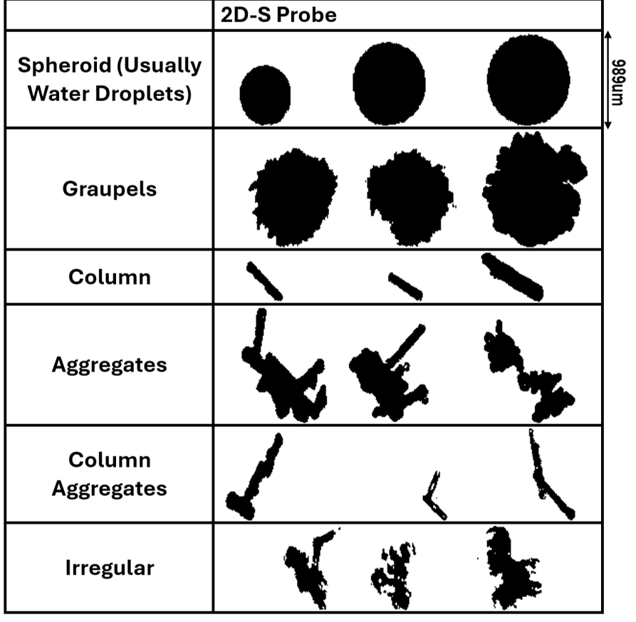

Integrated Microphysics • Lightning Mapping • Orientation Dynamics
This project presents a data-driven framework for analyzing atmospheric electrification using airborne microphysics, radar observations, and lightning activity. The system integrates multiple data sources into a unified Electrification Risk Index (ERI) that quantifies storm intensity and charge separation potential.
Using high-resolution particle imagery from optical array probes (2D-S and HVPS-3), ice particle orientation and microphysical properties are extracted and combined with lightning flash rates and atmospheric dynamics to characterize electrified regions within convective storms.
The resulting ERI enables both spatial and temporal analysis of storm electrification, highlighting high-risk regions and capturing the evolution of electrical activity throughout the storm lifecycle.
This platform serves as both a visualization tool and an analytical framework, demonstrating how microphysical observations can be directly linked to lightning behavior and used to estimate electrification risk in real time.
This project focuses on the analysis and fusion of synchronized atmospheric datasets to investigate the role of electric fields in convective storms.
The primary objective is to test the hypothesis that atmospheric electric fields influence the alignment and morphology of cloud ice crystals.
By linking microphysical observations with lightning activity, this study aims to identify measurable indicators of electrification that can support the development of early warning systems for lightning hazards.
This project integrates multiple synchronized datasets collected during airborne observations of convective storms using the NRC Convair-580 research aircraft.
High-resolution particle imagery is captured using optical array probes, enabling analysis of particle size, shape, and orientation.


Lightning activity is obtained from the Houston Lightning Mapping Array, providing spatial and temporal information on flash events.
Radar data is used to characterize storm intensity and precipitation structure through reflectivity measurements.
Aircraft measurements include altitude, temperature, liquid water content, and vertical wind (updraft), enabling detailed analysis of storm dynamics.

The Electrification Risk Index (ERI) quantifies storm electrification intensity by integrating microphysical properties, lightning activity, and atmospheric dynamics into a single normalized indicator.
Higher ERI values correspond to regions with increased charge separation potential, typically associated with strong updrafts, high ice particle concentrations, and elevated lightning flash rates.
Peak ERI (Storm Core): 0.42 — High Electrification
Current ERI at aircraft position: 0.04 (Low)
Classification: Low (0–0.15) | Moderate (0.15–0.30) | High (>0.30)


The ERI field highlights a concentrated region of elevated electrification coinciding with the storm core. The aircraft trajectory intersects this region during peak activity, where ERI values increase significantly.
Time-series analysis shows a clear rise in electrification intensity during the mature stage of the storm, followed by a gradual decay as convective activity weakens.
The methodology integrates multiple data sources into a unified analysis pipeline to quantify storm electrification and analyze particle behavior.
Key storm indicators are extracted and combined to compute the ERI:
Each feature is normalized and combined using a weighted sum to produce a time-resolved electrification risk indicator.
ERI = w₁·Flash + w₂·Size + w₃·Reflectivity + w₄·Updraft + w₅·LWC
Following the identification of electrified regions using the Electrification Risk Index (ERI), microphysical analysis is performed to investigate particle behavior within the storm.
This analysis focuses on particle shape, size, and orientation, with particular attention to how electric fields influence alignment during periods of high lightning activity.
Particle orientation is determined by fitting an ellipse to each detected particle, where the major axis defines the orientation angle relative to the horizontal axis.

Raw probe data is processed through a structured pipeline involving image reconstruction, binary segmentation, contour extraction, and ellipse fitting. This enables classification of particle orientation into horizontal, vertical, and diagonal categories.

Examples of particle types captured by the 2D-S probe, including spheroids, graupel, columns, aggregates, and irregular particles. These variations in shape and structure are critical for understanding microphysical behavior within electrified regions.



Results show a clear shift in particle orientation under high electrification conditions, with increased vertical alignment and reduced horizontal alignment, suggesting a direct influence of electric fields on particle behavior.
Collaboration with NRC Canada and Carleton University.